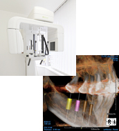

インプラントならアイデンタルクリニック トップページ > 治療の流れ
インプラント治療をお考え・お悩みの方は、 ※ご予約はフリーダイヤル0120-848-479へ |
|  | 当院は歯科専用ＣＴ（コンピューター活断撮影器）を完備しております。 当院は、このCT撮影と診断を、最終治療の有無に関わらず無料で提供していますので、インプラントの治療をお考え・お悩みの方は、気軽にご利用ください。 また、当院ではインプラント治療の前段階で必要な口腔内の治療を包括的にお受けしています。お口の状態に合わせて、ドクターが最適な治療計画をご提案いたします。 |
|---|
ＣＴを使って症状を立体的に把握した後は、専門医が症状をわかりやすくご説明し、お客様の悩みを伺うなど、カウンセリングを行います。 治療計画をお話する際に、期間、回数については詳細にご説明させていただきますので、お客様ご自身でご納得いくまでご検討ください。 |
|
治療のご検討が済まれたら、 【ローン・クレジットカードのご利用も可能です】 |
当院は滅菌ディスポーザブル（使い捨て）を徹底し、安心安全な治療（施術）を心がけています。 また、治療に用いるインプラントも、国内・海外産ともに最もメジャー（＝トップシェア）なメーカーの純正品をご提供しています。 １回の治療（施術）は、概ね30分×本数分かかります。楽な服装でリラックスしてご来院下さい。 治療（施術）が終わると、メンテナンス・予防プログラムに移行します。 メンテナンスについて このように、 |